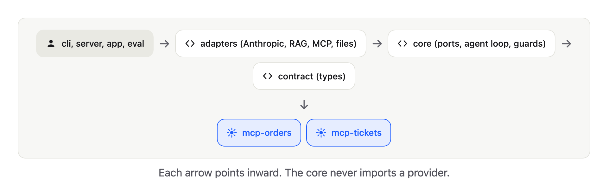
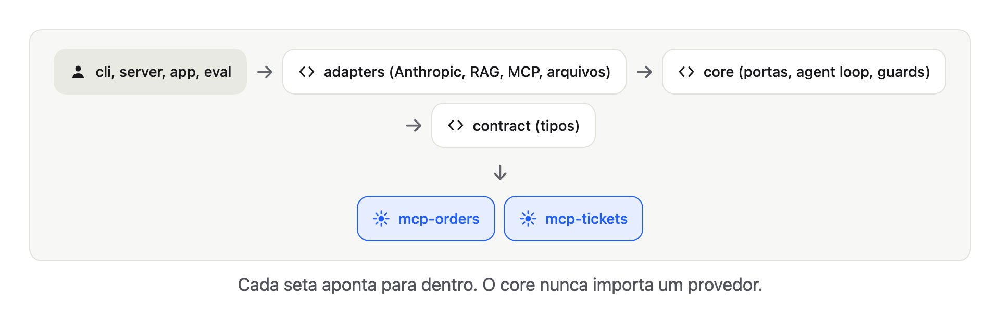

Your "AI agent" is mostly if statements (and that is the point)

Title options for Medium (pick one)
1. Provocative: "Your 'AI agent' is mostly if statements (and that is the point)"
2. Career: "I built a multi-agent AI assistant without a framework. Here is what it taught me."
3. Best practices: "RAG, MCP and multi-agent in practice: where the model belongs and where plain code must win"
⚠️ Opening provocation
The market is flooded with buzzwords: RAG, MCP, multi-agent architecture, guardrails. Every day a new framework promises "autonomous agents in two lines".
What happens when a demo agent meets a real support desk? It invents policies, ignores business rules and leaks data.
Enough vibes-based engineering.
So I built one from scratch in Kotlin, with no framework, and measured it. No jargon wall: first the ideas in plain words, then the code for the curious.

1️⃣ The big illusion of "everything is an LLM": deterministic vs non-deterministic
There is an illusion that the language model should decide 100% of a piece of software. But an LLM is a probabilistic engine. Asking it, by prompt, to never print a credit card in a log is Russian roulette.
+-----------------------------------------------------------------------+
| HYBRID SYSTEM (DSupport) |
+------------------------------------+----------------------------------+
| Model (non-deterministic) | Code (deterministic) |
+------------------------------------+----------------------------------+
| - understand natural language | - validate types and rules |
| - decide which tool to call | - hide sensitive data |
| - draft the reply | - block what must not pass |
| - route between specialists | - tests that run offline |
+------------------------------------+----------------------------------+Three ways to build it:
1 · Only deterministic (if/else, state machines). It does not hallucinate, but it does not understand paraphrase and the rule list grows forever.
2 · Only a model ("autonomous agent"). It promises everything and delivers unpredictable answers, endless loops and runaway cost.
3 · Hybrid (DSupport). The model understands and picks tools. The code validates, blocks and tests.
⚠️ Alert
Relying on the prompt alone fails in production. A prompt is a suggestion, not a guarantee. A prompt injection or a stochastic variation breaks the rule.
Be honest: a deterministic version is the first thing you should try. Here is what it looks like.
// A deterministic support router (illustration, not in the repo)
fun route(message: String): Intent = when {
"refund" in message.lowercase() -> Intent.POLICY
Regex("""order\s*#?\d+""").containsMatchIn(message) -> Intent.ORDER
else -> Intent.OTHER
}It is fast, free, testable and 100% predictable. Now feed it what customers actually write:
"my package never showed up" -> OTHER (wrong)
"where is the thing I bought Monday?" -> OTHER (wrong)
"quero meu dinheiro de volta" -> OTHER (wrong)
⚠️ Alert
The deterministic version fails on language, not on logic. The agent fails on trust. Pick the failure you can live with.
The decision, as five blocks
1 · Closed input, known rules? Use code. Do not pay for a model to read a status enum.
2 · Open language, many phrasings? Use a model to understand it.
3 · Cannot be wrong (money, identity, permissions)? The model proposes, code decides.
4 · Must be auditable? Code, or a model whose output code validates.
5 · Tiny cost or latency budget? Code.
Where the model is, and where code is
Five roles use a model: the orchestrator and the three specialists, plus the reviewer. Fourteen pieces are plain code: IdentityGate, Redaction, RedactResults, MentionTicket, TicketDedup, GuardPolicy, SupportAnswerValidator, the review limit and escalation, MarkdownChunker, the TF-IDF search, the four tools, the MCP client and servers, TraceReport and the eval scorer.
💡 Takeaway
Use the model at the edges (understanding language, writing the reply). Keep the middle deterministic.
2️⃣ The project and the architecture: clean separation of responsibilities
A support assistant. A customer writes:
"My order 1042 has not arrived. My email is ana@example.com"

It must answer only from sources, never invent a ticket number, hand the case to a human when unsure, and be measured, not admired.
Repository: github.com/diegoferreiracaetano/dsupport-kt
dsupport-kt/
├── contract/ shared vocabulary: events, answer (Kotlin Multiplatform)
├── core/ ports, agent loop, guards, review, use case (Kotlin Multiplatform)
├── adapters/ Anthropic client, RAG, JSON files, MCP client
├── cli/ terminal entry point
├── eval/ golden dataset, scoring, reports
├── mcp-orders/ MCP server: order tools
├── mcp-tickets/ MCP server: ticket tools
├── server/ Ktor API (Server-Sent Events)
├── app/ Compose app (desktop and iOS)
├── config/ agents.json, mcp-servers.json
└── data/ orders, golden dataset, help-center articles✅ Rule of thumb
Dependencies point inward. The core defines ports (interfaces). Adapters at the edge implement them. The core never imports a provider.

How the modules are separated
1 · contract: the shared types (SupportAnswer, AgentEvent). No dependencies, ready for Kotlin Multiplatform.
2 · core: the heart. Agent loop, orchestration, guardrails and the ports (interfaces). It does not know what HTTP, Anthropic or JSON is.
3 · adapters: implement the ports. Anthropic client, RAG, files, MCP client. Swapping Claude for another model is writing a new adapter, without touching core.
4 · mcp-orders and mcp-tickets: independent servers that speak MCP.
5 · cli, server, app: entry points (terminal, Ktor API with SSE, Compose app).
6 · eval: the evaluation suite with a golden dataset.
3️⃣ The concepts in practice (from theory to code)
01 · Agent loop: the model decides, your code acts

A model only produces text. The loop lets it ask for help, read the result and try again.
private suspend fun loop(): String {
repeat(maxTurns) { // always bounded
val reply = llm.next(LlmRequest(system, history.toList(), specs))
when (reply) {
is LlmReply.Text -> return finalAnswer(reply.text) // done
is LlmReply.ToolCalls -> {
// the model only ASKS. Several calls in one turn run in parallel
val results = coroutineScope {
reply.calls.map { call -> async { execute(call.tool, call.args) } }.awaitAll()
}
// results go back into the history, in the order they were requested
reply.calls.zip(results).forEach { (call, r) ->
history += Message.ToolResult(call.id, call.tool, r.content, r.isError)
}
}
}
}
return "Turn limit of $maxTurns reached. Escalating to a human agent."
}⚠️ Alert
No limit means a confused model can call tools forever and burn your budget.
02 · LLM client: one port, one adapter per provider

// Port, in the core. No provider import here.
interface LlmClient {
suspend fun next(request: LlmRequest): LlmReply // text or tool calls
suspend fun structured(request: LlmRequest, schema: OutputSchema): StructuredReply
}AnthropicLlmClient is the adapter. It retries on 429 and 5xx, and fails fast on 400 and 401 because retrying does not fix them.
03 · Tools: functions the model can ask for

class GetOrderStatusTool(private val orders: OrderGateway) : Tool {
override val spec = ToolSpec(
name = "get_order_status",
description = "Looks up the status and delay of an order. Requires order_id and email.",
inputSchema = stringSchema("order_id", "email"),
)
override suspend fun run(args: JsonObject): ToolResult {
val orderId = args.stringArg("order_id") ?: return fail("missing_argument:order_id")
val email = args.stringArg("email") ?: return fail("missing_argument:email")
// A tool never throws: the failure comes back as a result the model can read.
val order = orders.findOwned(orderId, email) ?: return fail("order_not_found_or_email_mismatch")
return ok("status" to JsonPrimitive(order.status.wire), "eta" to JsonPrimitive(order.eta.toString()))
}
}💡 Tip
The description is part of the prompt. A vague description makes the model pick the wrong tool.
04 · RAG: answer with a consultation

1 split articles into passages (chunking) · 2 turn passages into vectors (TF-IDF embeddings) · 3 return the closest ones · 4 drop anything below a relevance cut-off.
// SearchKbTool: the cut-off is what stops "answering from an unrelated passage"
val relevant = kb.search(query).filter { it.score >= minScore } // minScore = 0.25
if (relevant.isEmpty()) return fail("nothing_relevant_found") // say "nothing found"⚠️ Alert
Without a cut-off, search always returns something, and the model happily answers from it.
05 · MCP: tools served by separate programs

{
"servers": [
{ "name": "orders", "command": ["mcp-orders/build/install/mcp-orders/bin/mcp-orders"], "env": { "DATA_DIR": "data" } },
{ "name": "tickets", "command": ["mcp-tickets/build/install/mcp-tickets/bin/mcp-tickets"], "env": { "DATA_DIR": "data" } }
]
}// A remote tool can time out, die or throw. The agent must never hang or crash.
override suspend fun run(args: JsonObject): ToolResult = try {
withTimeout(timeoutMs) { connection.callTool(spec.name, args) }
} catch (e: Exception) {
ToolResult("error: ${e.message}", isError = true)
}Adding a server is one line of configuration. The agent code does not change.
⚠️ Alert
On a stdio MCP server,stdoutis the protocol. One strayprintlncorrupts the conversation.
06 · Multi-agent orchestration

One agent with every tool gets confused. An orchestrator delegates, each specialist sees only its own tools.
{
"agents": {
"knowledge": { "tools": ["search_kb"] },
"orders": { "tools": ["get_order_status", "track_shipment"] },
"escalation": { "tools": ["create_ticket"] }
}
}A specialist is exposed to the orchestrator as a tool, and a fresh agent is created per call, so histories never mix.
07 · Guardrails: rules the model cannot skip

class IdentityGate : Hook {
override val covers = setOf("get_order_status", "track_shipment")
override suspend fun beforeTool(agent: String, tool: ToolSpec, args: JsonObject): Decision = when {
// No valid order number: the model never reaches the tool.
args.stringArg("order_id")?.let { digits.matches(it) } != true ->
Decision.Deny("order_id is missing or invalid. Ask the customer for the order number.")
args.stringArg("email")?.let { Patterns.email.matches(it) } != true ->
Decision.Deny("email is missing or invalid. Ask the customer for the email used in the purchase.")
else -> Decision.Allow
}
}Another one, for a real bug class: two parallel create_ticket calls.
// One open ticket per customer. A creation in flight RESERVES the customer,
// so two simultaneous calls cannot both pass.
override suspend fun beforeTool(agent: String, tool: ToolSpec, args: JsonObject): Decision {
val email = customerOf(tool, args) ?: return Decision.Allow
return lock.withLock {
if (email in inFlight) return@withLock Decision.Deny("A ticket for this customer is already being created.")
tickets.findOpenByEmail(email)?.let { return@withLock Decision.Deny("Ticket ${it.ticketId} is already open.") }
inFlight += email
Decision.Allow
}
}⚠️ Alert
"Please never create duplicate tickets" in the prompt is a wish. TheMutexis a guarantee.
08 · Structured output and validation

The final answer is a JSON form. Then plain code checks what a schema cannot.
fun problems(answer: SupportAnswer, evidence: List<String>): List<String> = buildList {
val results = evidence.joinToString("\n")
if (answer.intent !in INTENTS) add("invalid intent: ${answer.intent}")
if (answer.confidence !in 0.0..1.0) add("confidence out of range 0..1")
answer.ticketId?.let { ticket ->
// an invented ticket id is rejected: it must appear in what the tools returned
if (ticket !in results) add("ticket $ticket does not appear in the tool results (invented?)")
}
answer.sources.filter { !results.contains(it, ignoreCase = true) }
.forEach { add("source \"$it\" does not appear in the tool results") }
}09 · Producer and reviewer, with a limit

suspend fun answer(question: String): SupportAnswer {
producer.run(question)
for (round in 0..maxRevisions) { // at most 2 revisions
val draft = decode(producer.finish(SupportAnswerSchema.output))
val problems = validator.problems(draft, producer.evidence) // cheap, exact: code first
.ifEmpty { review(question, draft) } // then a model judges the claims
if (problems.isEmpty()) return draft
producer.followUp("A reviewer rejected your answer. Fix these points:\n" + problems.joinToString("\n"))
}
return escalate(question) // CODE opens the ticket, not the model
}💡 Takeaway
The reviewer is a model too. That is why deterministic checks run first.
10 · Observability: a flight recorder

Every event carries a runId and a parentRunId, so a tree can be rebuilt:
[orchestrator] r1
model call: 900 in / 80 out tokens, 700 ms
tool orders: 1300 ms
[orders] r2
model call: 400 in / 40 out tokens, 500 ms11 · Evals: an exam with an answer key

15 golden cases, each run 3 times, because the same code gave different results.
The evals found what code review never would: two rules that contradicted each other, a reviewer that invented objections, and a routing error that repeated every time. About 30 cents, one afternoon.
12 · Server and app


// POST /chat streams one Server-Sent Events frame per AgentEvent.
post("/chat") {
val question = receiveQuestion() ?: return@post call.respondText("bad request", status = BadRequest)
call.respondTextWriter(ContentType.Text.EventStream) {
answerCustomer(question).collect { event ->
write(ServerSentEvents.frame(event))
flush() // flush is what makes the live trace possible
}
}
}The API key lives only on the server. The Compose app draws the conversation, the sources, an escalation badge and the live trace.
4️⃣ Anatomy of a real run
The customer writes: "My order 1042 has not arrived. My email is ana@example.com".

This is the real terminal trace (shortened):
[orchestrator] calls orders {"task":"Check the status, tracking and delivery progress..."}
[orders] calls get_order_status {"order_id":"1042","email":"ana@example.com"}
[orders] calls track_shipment {"order_id":"1042","email":"ana@example.com"} <- in parallel
[orders] get_order_status finished in 12 ms: {"ok":true,"status":"in_transit","late":true,"days_late":10}
[orchestrator] calls escalation {"task":"Delayed order. Order number: 1042 ..."}
[escalation] create_ticket finished in 17 ms: {"ok":true,"ticket_id":"TCK-1001"}
review round 1: rejected (4 problems)
review round 2: approved💡 Efficiency and cost
12 model calls, about 15 thousand input tokens and 2 thousand output tokens. Cost: US$ 0.0025 (a quarter of a cent) withclaude-haiku-5-5.
5️⃣ Evals: how to prove the agent works
If you do not measure the agent, you only have opinions. eval runs a golden dataset of 15 cases, 3 times each, on every change.
| Metric | Before | After | What it means in practice |
|---|---|---|---|
| Routing accuracy | 100% | 100% | The orchestrator sends the question to the right specialist |
| Groundedness | 100% | 100% | No answer invents facts outside the sources |
| No leaks | 100% | 100% | Customer data does not show up where it should not |
| Expected facts | 93% | 100% | The vital information was delivered |
| Cited sources | 86% | 100% | You can see where the answer came from |
| Escalation precision | 80% | 100% | Hands over to a human at the right time |
| Fallback after failed review | 9% | 0% | Answers refined without hitting the limit |
Tests and containerization
One test class per production class. Doubles at the ports. Zero API calls.
@Test
fun `given a malformed email when checking an order tool then should deny`() = runTest {
val decision = gate.beforeTool("orders", spec("get_order_status"),
argsOf("order_id" to "1042", "email" to "not-an-email"))
assertIs<Decision.Deny>(decision)
}A multi-stage Dockerfile (build with the JDK, run with the JRE):
# Stage 1: build the distribution with the full JDK
FROM eclipse-temurin:21-jdk AS build
WORKDIR /src
COPY . .
RUN ./gradlew :server:installDist --no-daemon
# Stage 2: run it on a small JRE image
FROM eclipse-temurin:21-jre
WORKDIR /app
COPY --from=build /src/server/build/install/server/ ./
COPY config ./config
COPY data ./data
ENV DATA_DIR=data
EXPOSE 8080
CMD ["bin/server"]The price of "multi"
⚠️ Alert
One delayed-order question cost 12 model calls, about 15,000 input tokens and 10 seconds. Multi-agent is not free.
Use one agent with tools when the task is small. Split into specialists only when prompts and toolsets grow and the roles are clearly different.
🏁 Provocative conclusion
Software engineering did not change just because we now use AI. Agents without strong typing, clean architecture, guardrails in code and automated evaluation are unpredictable toys.
The innovation is not the framework of the week. It is knowing where to use the model's non-determinism and where to use the determinism of code.
Conclusion
The model decides. Your code acts, validates and escalates. Rules live in code. Quality is measured. Providers are replaceable.
Your turn
1 · Which rule in your own project could be code instead of a prompt? Tell me in the comments.
2 · Disagree that most of an agent should be deterministic? I want to hear the counter-example.
3 · Share this with someone about to build "an AI agent". A star on the repo helps: github.com/diegoferreiracaetano/dsupport-kt
Seu "agente de IA" é quase todo if (e é isso que importa)

Opções de título para o Medium (escolha uma)
1. Provocativo: "Seu 'agente de IA' é quase todo if (e é isso que importa)"
2. Carreira: "Construí um assistente de IA multiagente sem framework. Eis o que aprendi."
3. Boas práticas: "RAG, MCP e multiagente na prática: onde o modelo entra e onde o código comum tem que vencer"
⚠️ Provocação inicial
O mercado foi inundado de buzzwords: RAG, MCP, arquitetura multiagente, guardrails. Todo dia surge um framework prometendo "agentes autônomos em duas linhas".
Mas o que acontece quando um agente de demo encontra um suporte ao cliente de verdade? Ele inventa políticas, ignora regras de negócio e vaza dados.
Chega de vibes-based engineering.
Então construí um do zero em Kotlin, sem framework, e medi. Sem paredão de jargão: primeiro as ideias em palavras simples, depois o código para os curiosos.

1️⃣ A grande ilusão do "tudo é LLM": determinístico vs não-determinístico
Existe a ilusão de que o modelo de linguagem deve decidir 100% do software. Mas um LLM é um motor probabilístico. Pedir a ele, por prompt, que nunca mostre um cartão de crédito no log é roleta-russa.
+-----------------------------------------------------------------------+
| SISTEMA HÍBRIDO (DSupport) |
+------------------------------------+----------------------------------+
| Modelo (não-determinístico) | Código (determinístico) |
+------------------------------------+----------------------------------+
| - entender linguagem natural | - validar tipos e regras |
| - decidir qual ferramenta chamar | - ocultar dados sensíveis |
| - rascunhar a resposta | - barrar o que não pode passar |
| - rotear entre especialistas | - testes que rodam offline |
+------------------------------------+----------------------------------+Três jeitos de construir isso:
1 · Só determinístico (if/else, máquinas de estado). Não alucina, mas não entende paráfrase e a lista de regras cresce para sempre.
2 · Só modelo ("agente autônomo"). Promete tudo, entrega respostas imprevisíveis, laços infinitos e custo fora de controle.
3 · Híbrido (o DSupport). O modelo entende e escolhe ferramentas. O código valida, barra e testa.
⚠️ Alerta
Depender só do prompt falha em produção. Prompt é sugestão, não garantia. Uma injeção de prompt ou uma variação estocástica quebra a regra.
Sendo honesto: uma versão determinística é a primeira coisa que você deve tentar. Veja como ela fica.
// Um roteador de suporte determinístico (ilustração, não está no repositório)
fun route(message: String): Intent = when {
"refund" in message.lowercase() -> Intent.POLICY
Regex("""order\s*#?\d+""").containsMatchIn(message) -> Intent.ORDER
else -> Intent.OTHER
}É rápido, grátis, testável e 100% previsível. Agora dê a ele o que os clientes realmente escrevem:
"my package never showed up" -> OTHER (errado)
"where is the thing I bought Monday?" -> OTHER (errado)
"quero meu dinheiro de volta" -> OTHER (errado)
⚠️ Alerta
A versão determinística falha na linguagem, não na lógica. O agente falha na confiança. Escolha a falha com a qual você consegue viver.
A decisão, em cinco blocos
1 · Entrada fechada, regras conhecidas? Use código. Não pague um modelo para ler um enum de status.
2 · Linguagem aberta, muitas formas de dizer? Use um modelo para entender.
3 · Não pode errar (dinheiro, identidade, permissões)? O modelo propõe, o código decide.
4 · Precisa ser auditável? Código, ou um modelo cuja saída o código valida.
5 · Orçamento mínimo de custo ou latência? Código.
Onde está o modelo e onde está o código
Cinco papéis usam um modelo: o orquestrador e os três especialistas, mais o revisor. Catorze peças são código comum: IdentityGate, Redaction, RedactResults, MentionTicket, TicketDedup, GuardPolicy, SupportAnswerValidator, o limite da revisão e o escalonamento, MarkdownChunker, a busca TF-IDF, as quatro ferramentas, o cliente e os servidores MCP, TraceReport e o pontuador dos evals.
💡 Conclusão
Use o modelo nas bordas (entender a linguagem, escrever a resposta). Mantenha o meio determinístico.
2️⃣ O projeto e a arquitetura: separação limpa de responsabilidades
Um assistente de suporte. Um cliente escreve:
"My order 1042 has not arrived. My email is ana@example.com"

Ele precisa responder só com fontes, nunca inventar um número de ticket, passar o caso a um humano na dúvida e ser medido, não admirado.
Repositório: github.com/diegoferreiracaetano/dsupport-kt
dsupport-kt/
├── contract/ vocabulário compartilhado: eventos, resposta (Kotlin Multiplatform)
├── core/ portas, agent loop, guards, revisão, caso de uso (Kotlin Multiplatform)
├── adapters/ cliente Anthropic, RAG, arquivos JSON, cliente MCP
├── cli/ entrada pelo terminal
├── eval/ golden dataset, pontuação, relatórios
├── mcp-orders/ servidor MCP: ferramentas de pedidos
├── mcp-tickets/ servidor MCP: ferramentas de tickets
├── server/ API Ktor (Server-Sent Events)
├── app/ app Compose (desktop e iOS)
├── config/ agents.json, mcp-servers.json
└── data/ pedidos, golden dataset, artigos da central de ajuda✅ Regra de bolso
As dependências apontam para dentro. O core define portas (interfaces). Adapters na borda as implementam. O core nunca importa um provedor.

Como os módulos são separados
1 · contract: os tipos compartilhados (SupportAnswer, AgentEvent). Sem dependências, pronto para Kotlin Multiplatform.
2 · core: o coração. Agent loop, orquestração, guardrails e as portas (interfaces). Ele não sabe o que é HTTP, Anthropic ou JSON.
3 · adapters: implementam as portas. Cliente Anthropic, RAG, arquivos, cliente MCP. Trocar o Claude por outro modelo é escrever um adapter novo, sem tocar no core.
4 · mcp-orders e mcp-tickets: servidores independentes que falam MCP.
5 · cli, server, app: pontos de entrada (terminal, API Ktor com SSE, app Compose).
6 · eval: a suíte de avaliação com golden dataset.
3️⃣ Os conceitos na prática (da teoria ao código)
01 · Agent loop: o modelo decide, o seu código age

Um modelo só produz texto. O laço deixa ele pedir ajuda, ler o resultado e tentar de novo.
private suspend fun loop(): String {
repeat(maxTurns) { // sempre limitado
val reply = llm.next(LlmRequest(system, history.toList(), specs))
when (reply) {
is LlmReply.Text -> return finalAnswer(reply.text) // pronto
is LlmReply.ToolCalls -> {
// o modelo só PEDE. Várias chamadas no mesmo turno rodam em paralelo
val results = coroutineScope {
reply.calls.map { call -> async { execute(call.tool, call.args) } }.awaitAll()
}
// os resultados voltam ao histórico, na ordem em que foram pedidos
reply.calls.zip(results).forEach { (call, r) ->
history += Message.ToolResult(call.id, call.tool, r.content, r.isError)
}
}
}
}
return "Turn limit of $maxTurns reached. Escalating to a human agent."
}⚠️ Alerta
Sem limite, um modelo confuso pode chamar ferramentas para sempre e queimar o seu orçamento.
02 · Cliente de LLM: uma porta, um adapter por provedor

// Porta, no core. Nenhum import de provedor aqui.
interface LlmClient {
suspend fun next(request: LlmRequest): LlmReply // texto ou chamadas de ferramenta
suspend fun structured(request: LlmRequest, schema: OutputSchema): StructuredReply
}O AnthropicLlmClient é o adapter. Ele repete em 429 e 5xx e falha na hora em 400 e 401, porque repetir não resolve.
03 · Ferramentas: funções que o modelo pode pedir

class GetOrderStatusTool(private val orders: OrderGateway) : Tool {
override val spec = ToolSpec(
name = "get_order_status",
description = "Consulta o status e o atraso de um pedido. Exige order_id e email.",
inputSchema = stringSchema("order_id", "email"),
)
override suspend fun run(args: JsonObject): ToolResult {
val orderId = args.stringArg("order_id") ?: return fail("missing_argument:order_id")
val email = args.stringArg("email") ?: return fail("missing_argument:email")
// Uma ferramenta nunca lança exceção: a falha volta como resultado que o modelo lê.
val order = orders.findOwned(orderId, email) ?: return fail("order_not_found_or_email_mismatch")
return ok("status" to JsonPrimitive(order.status.wire), "eta" to JsonPrimitive(order.eta.toString()))
}
}💡 Dica
A descrição faz parte do prompt. Uma descrição vaga faz o modelo escolher a ferramenta errada.
04 · RAG: responder com consulta

1 divida os artigos em trechos (chunking) · 2 transforme os trechos em vetores (embeddings TF-IDF) · 3 devolva os mais próximos · 4 descarte tudo abaixo de um corte de relevância.
// SearchKbTool: o corte é o que impede "responder com um trecho sem relação"
val relevant = kb.search(query).filter { it.score >= minScore } // minScore = 0.25
if (relevant.isEmpty()) return fail("nothing_relevant_found") // diga "nada encontrado"⚠️ Alerta
Sem corte, a busca sempre devolve alguma coisa, e o modelo responde alegremente com ela.
05 · MCP: ferramentas servidas por programas separados

{
"servers": [
{ "name": "orders", "command": ["mcp-orders/build/install/mcp-orders/bin/mcp-orders"], "env": { "DATA_DIR": "data" } },
{ "name": "tickets", "command": ["mcp-tickets/build/install/mcp-tickets/bin/mcp-tickets"], "env": { "DATA_DIR": "data" } }
]
}// Uma ferramenta remota pode estourar o tempo, morrer ou lançar exceção. O agente nunca pode travar nem quebrar.
override suspend fun run(args: JsonObject): ToolResult = try {
withTimeout(timeoutMs) { connection.callTool(spec.name, args) }
} catch (e: Exception) {
ToolResult("error: ${e.message}", isError = true)
}Adicionar um servidor é uma linha de configuração. O código do agente não muda.
⚠️ Alerta
Num servidor MCP stdio, ostdouté o protocolo. Umprintlnsolto corrompe a conversa.
06 · Orquestração multiagente

Um agente com todas as ferramentas se confunde. Um orquestrador delega, e cada especialista só enxerga as suas ferramentas.
{
"agents": {
"knowledge": { "tools": ["search_kb"] },
"orders": { "tools": ["get_order_status", "track_shipment"] },
"escalation": { "tools": ["create_ticket"] }
}
}Um especialista é exposto ao orquestrador como uma ferramenta, e um agente novo é criado a cada chamada, então os históricos nunca se misturam.
07 · Guardrails: regras que o modelo não consegue pular

class IdentityGate : Hook {
override val covers = setOf("get_order_status", "track_shipment")
override suspend fun beforeTool(agent: String, tool: ToolSpec, args: JsonObject): Decision = when {
// Sem número de pedido válido: o modelo nunca chega à ferramenta.
args.stringArg("order_id")?.let { digits.matches(it) } != true ->
Decision.Deny("order_id is missing or invalid. Ask the customer for the order number.")
args.stringArg("email")?.let { Patterns.email.matches(it) } != true ->
Decision.Deny("email is missing or invalid. Ask the customer for the email used in the purchase.")
else -> Decision.Allow
}
}Outro, para uma classe real de bug: duas chamadas create_ticket em paralelo.
// Um ticket aberto por cliente. Uma criação em andamento RESERVA o cliente,
// então duas chamadas simultâneas não passam as duas.
override suspend fun beforeTool(agent: String, tool: ToolSpec, args: JsonObject): Decision {
val email = customerOf(tool, args) ?: return Decision.Allow
return lock.withLock {
if (email in inFlight) return@withLock Decision.Deny("A ticket for this customer is already being created.")
tickets.findOpenByEmail(email)?.let { return@withLock Decision.Deny("Ticket ${it.ticketId} is already open.") }
inFlight += email
Decision.Allow
}
}⚠️ Alerta
"Por favor nunca crie tickets duplicados" no prompt é um desejo. OMutexé uma garantia.
08 · Saída estruturada e validação

A resposta final é um formulário JSON. Depois o código comum confere o que um esquema não consegue.
fun problems(answer: SupportAnswer, evidence: List<String>): List<String> = buildList {
val results = evidence.joinToString("\n")
if (answer.intent !in INTENTS) add("invalid intent: ${answer.intent}")
if (answer.confidence !in 0.0..1.0) add("confidence out of range 0..1")
answer.ticketId?.let { ticket ->
// um id de ticket inventado é rejeitado: ele precisa aparecer no que as ferramentas devolveram
if (ticket !in results) add("ticket $ticket does not appear in the tool results (invented?)")
}
answer.sources.filter { !results.contains(it, ignoreCase = true) }
.forEach { add("source \"$it\" does not appear in the tool results") }
}09 · Produtor e revisor, com limite

suspend fun answer(question: String): SupportAnswer {
producer.run(question)
for (round in 0..maxRevisions) { // no máximo 2 revisões
val draft = decode(producer.finish(SupportAnswerSchema.output))
val problems = validator.problems(draft, producer.evidence) // barato e exato: código primeiro
.ifEmpty { review(question, draft) } // depois um modelo julga as afirmações
if (problems.isEmpty()) return draft
producer.followUp("A reviewer rejected your answer. Fix these points:\n" + problems.joinToString("\n"))
}
return escalate(question) // o CÓDIGO abre o ticket, não o modelo
}💡 Conclusão
O revisor também é um modelo. Por isso as checagens determinísticas rodam primeiro.
10 · Observabilidade: uma caixa-preta de avião

Todo evento carrega um runId e um parentRunId, então dá para reconstruir uma árvore:
[orchestrator] r1
model call: 900 in / 80 out tokens, 700 ms
tool orders: 1300 ms
[orders] r2
model call: 400 in / 40 out tokens, 500 ms11 · Evals: uma prova com gabarito

15 casos dourados, cada um rodado 3 vezes, porque o mesmo código deu resultados diferentes.
Os evals acharam o que code review nunca acharia: duas regras que se contradiziam, um revisor que inventava objeções e um erro de roteamento que se repetia sempre. Cerca de 30 centavos, uma tarde.
12 · Servidor e app


// POST /chat transmite um quadro Server-Sent Events por AgentEvent.
post("/chat") {
val question = receiveQuestion() ?: return@post call.respondText("bad request", status = BadRequest)
call.respondTextWriter(ContentType.Text.EventStream) {
answerCustomer(question).collect { event ->
write(ServerSentEvents.frame(event))
flush() // o flush é o que torna o rastro ao vivo possível
}
}
}A chave da API vive só no servidor. O app Compose desenha a conversa, as fontes, um selo de escalonamento e o rastro ao vivo.
4️⃣ Anatomia de uma execução real
O cliente escreve: "My order 1042 has not arrived. My email is ana@example.com".

Este é o rastro real no terminal (resumido):
[orchestrator] calls orders {"task":"Check the status, tracking and delivery progress..."}
[orders] calls get_order_status {"order_id":"1042","email":"ana@example.com"}
[orders] calls track_shipment {"order_id":"1042","email":"ana@example.com"} <- em paralelo
[orders] get_order_status finished in 12 ms: {"ok":true,"status":"in_transit","late":true,"days_late":10}
[orchestrator] calls escalation {"task":"Delayed order. Order number: 1042 ..."}
[escalation] create_ticket finished in 17 ms: {"ok":true,"ticket_id":"TCK-1001"}
review round 1: rejected (4 problems)
review round 2: approved💡 Eficiência e custo
12 chamadas ao modelo, cerca de 15 mil tokens de entrada e 2 mil de saída. Custo: US$ 0,0025 (um quarto de centavo) comclaude-haiku-5-5.
5️⃣ Evals: como provar que o agente funciona
Se você não mede o agente, você só tem opiniões. O eval roda um golden dataset de 15 casos, 3 vezes cada, a cada mudança.
| Métrica | Antes | Depois | O que significa na prática |
|---|---|---|---|
| Acerto de roteamento | 100% | 100% | O orquestrador manda a dúvida ao especialista certo |
| Groundedness | 100% | 100% | Nenhuma resposta inventa fatos fora das fontes |
| Sem vazamento | 100% | 100% | Dados do cliente não aparecem onde não deviam |
| Fatos esperados | 93% | 100% | As informações vitais foram entregues |
| Fontes citadas | 86% | 100% | Dá para ver de onde veio a resposta |
| Precisão de escalonamento | 80% | 100% | Passa a um humano na hora certa |
| Fallback por falha de revisão | 9% | 0% | Respostas refinadas sem estourar o limite |
Testes e containerização
Uma classe de teste por classe de produção. Dublês nas portas. Zero chamadas de API.
@Test
fun `given a malformed email when checking an order tool then should deny`() = runTest {
val decision = gate.beforeTool("orders", spec("get_order_status"),
argsOf("order_id" to "1042", "email" to "not-an-email"))
assertIs<Decision.Deny>(decision)
}Um Dockerfile multi-stage (compila com o JDK, roda com o JRE):
# Estágio 1: gera a distribuição com o JDK completo
FROM eclipse-temurin:21-jdk AS build
WORKDIR /src
COPY . .
RUN ./gradlew :server:installDist --no-daemon
# Estágio 2: roda numa imagem JRE pequena
FROM eclipse-temurin:21-jre
WORKDIR /app
COPY --from=build /src/server/build/install/server/ ./
COPY config ./config
COPY data ./data
ENV DATA_DIR=data
EXPOSE 8080
CMD ["bin/server"]O preço do "multi"
⚠️ Alerta
Uma pergunta de pedido atrasado custou 12 chamadas ao modelo, cerca de 15.000 tokens de entrada e 10 segundos. Multiagente não é de graça.
Use um agente com ferramentas quando a tarefa é pequena. Divida em especialistas só quando prompts e ferramentas crescem e os papéis são claramente diferentes.
🏁 Conclusão provocativa
Engenharia de software não mudou só porque agora usamos IA. Agentes sem tipagem forte, arquitetura limpa, guardrails em código e avaliação automatizada são brinquedos imprevisíveis.
A inovação não é o framework da semana. É saber onde usar o não-determinismo do modelo e onde usar o determinismo do código.
Conclusão
O modelo decide. O seu código age, valida e escala. As regras vivem no código. A qualidade é medida. Os provedores são substituíveis.
Sua vez
1 · Qual regra do seu projeto poderia ser código em vez de prompt? Conte nos comentários.
2 · Discorda que a maior parte de um agente deva ser determinística? Quero ouvir o contraexemplo.
3 · Compartilhe com quem está prestes a construir "um agente de IA". Uma estrela no repositório ajuda: github.com/diegoferreiracaetano/dsupport-kt